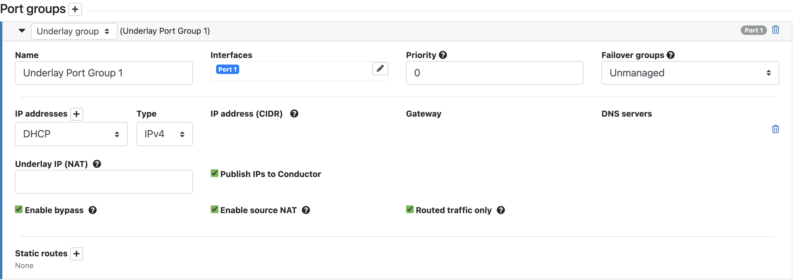
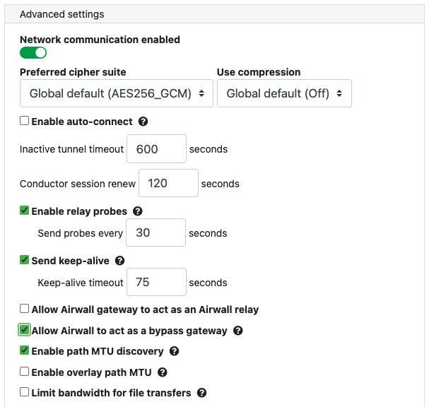
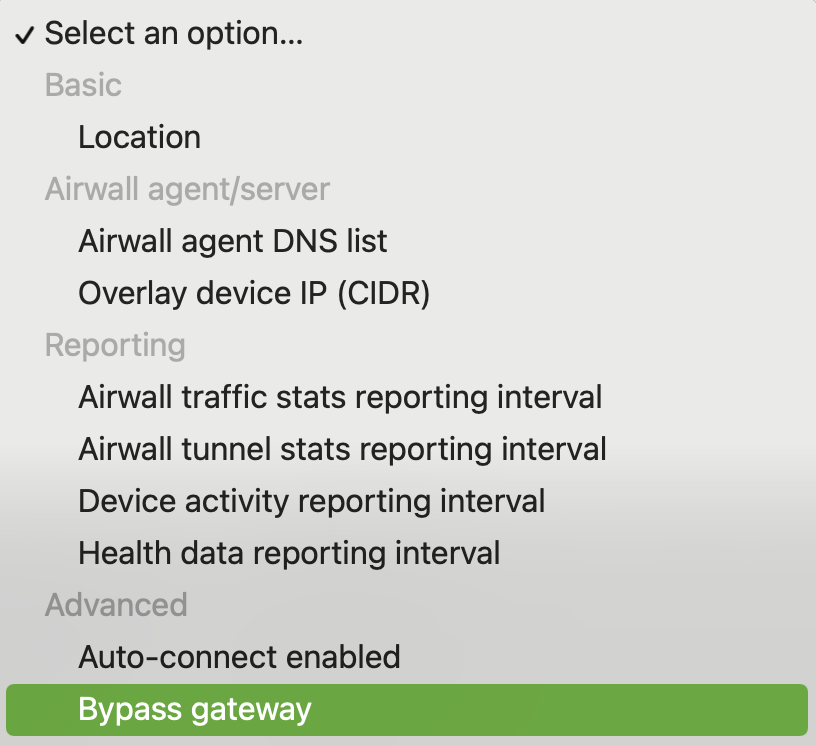
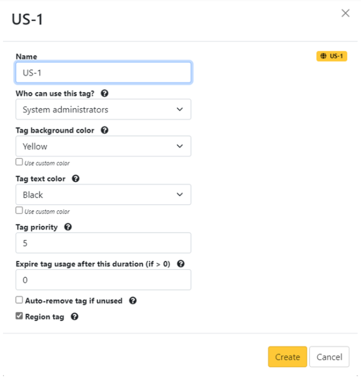
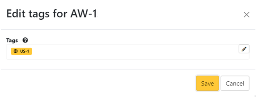

Backhaul Bypass
Set up backhaul bypass to allow any v3.0 or later Airwall Gateway to reach bypass destinations by tunneling traffic using designated bypass egress Airwall Gateways.
- Supported Roles
-
- System Administrators
- Network Administrators with the “Can view and edit bypass destinations” permission
- Supported Versions
- Airwall Gateways and
Conductor v3.0 and later. The Airwall Gateways for
both ends of the backhaul bypass and your Conductor
must all be on v3.0.
For region bypass both the Conductor and the Airwall must be v3.2.3 or later.
- Supported Airwall Gateways
- All v3.0 and later Airwall Gateways
Only the bypass egress gateways need to enable bypass on an underlay port group and ensure the bypass destination is reachable from this port group.
There is also an option to use a regional bypass for Airwalls that support backhaul bypass and are not gateways themselves. See Region Bypass.
The Conductor determines the bypass gateway to use in this order:
- Use a local bypass if the Airwall Gateway has a local bypass-enabled port group.
- Use an assigned bypass Airwall Gateway, if set.
- Use a random bypass egress gateway from the region pool. By default, permanently picking one, but failing over to another from the region if the connection is broken and another bypass egress gateway has been assigned to the region.
- Backhaul bypass can be used for any bypass destination including destinations using hostnames.
- Backhaul bypass can use relays just like normal overlay traffic. There is no special configuration needed on the Airwall Relay.
- You can set up backhaul Airwall Gateways with multiple bypass-enabled underlay port groups and use link manager to fail over between them.
- If you have both local bypass and a backhaul bypass set for an Airwall Gateway, it uses the local bypass for egress.
Requirements and Considerations
- You must configure at least one underlay port group with bypass enabled on all backhaul bypass Airwall Gateways.
- As a best practice, enable source NAT (SNAT) and routed-only mode on the bypass port group.
- When using hostname bypass destinations, you must meet these requirements:
- The DNS server used by the overlay device must be on the Conductor-configured allow-list for bypass DNS.
- The traffic path to resolve hosts must follow the same path on the overlay as the traffic to the actual bypass destination. This means that the DNS server must itself be a bypass destination and the overlay devices using it must have policy to it.
Set up Backhaul Bypass
-
Set up one or more Airwall Gateways with
Seamless bypass, including creating bypass destinations, creating an overlay with
devices and the bypass destination, and adding trust. For details, see Seamless Bypass.
Note: Bypass destinations are not assigned to individual Airwall Gateways. Any bypass gateway can bypass to any bypass destination, assuming underlay routing and trust is set up.
- Configure any Seamless bypass Airwall Gateways to be used as bypass Airwall Gateways.
- (Optional) Set up a bypass Airwall Gateway to be the default for your Airwall secure network. The default is used for all v3.0 Airwall Gateways that do not have a local bypass set up and do have trust set up to the bypass destination on an overlay. (See the Add trust step that follows)
-
Set up other v3.0 Airwall Gateways to
use a bypass Airwall Gateways,
selecting a specific one to use, or allowing it to use the default. Note that
you can assign a bypass gateway using Bulk Configuration of Airwall Edge Services.
Note: If you didn’t set a default in Conductor Settings, you need to select one to use.
- Add trust between devices and the bypass destination. For details, see Add and remove device trust.
- (Optional) Set up allowed DNS servers to enable hostname bypass destination. This step should already be done when you set up Seamless Bypass. (For instructions, see Enable DNS lookup for bypass destinations.)
Configure an Airwall Gateway as a Bypass gateway
Configuring an Airwall Gateway as a bypass gateway allows other Airwall Gateways to use it to access bypass destinations.
- Go to Airwalls and open an Airwall Gateway.
- Go to the Ports tab and select Edit Settings.
-
Open any Underlay port group, and check
Enable bypass.
Note: Using routed-only mode and source-NAT is recommended but not required.
- Go to the Airwall gateway tab and select Edit Settings.
-
Under Advanced settings, check Allow Airwall
to act as a bypass gateway, and select Update Settings.

Select a Specific Bypass Airwall Gateway
Once you've got a bypass Airwall Gateway set up, you can set up other Airwall Gateways to use it for bypass.
If you set up a bypass Airwall Gateway and set it as the default in the Conductor (see (Optional) Select a default Bypass Airwall Gateway), all v3.0 Airwall Gateways automatically use the default as needed. If you want an Airwall Gateway to use a specific one instead of the default, or if you have not selected a default, here's how.
- Go to Airwalls and open an Airwall Gateway that you want to use a bypass Airwall Gateway.
-
Set a bypass gateway to use:
Note: You can also set this option in bulk. See Bulk Configuration of Airwall Edge Services, and choose the Bypass gateway option:
- In an Overlay, add trust from this Airwall Gateway's local devices to the bypass destination.
Region Bypass
Use a Region Bypass to group and load balance bypass gateways by region. A bypass region is configured by creating a region tag. Add the region tag (or tags) to one or more bypass egress gateways and to the Airwalls you want to use with the region bypass egress gateways.
-
To create a tag in the Conductor, select the Tags icon
 .
.
- Click New tag.
- Give the tag a name and fill in the required information. See Create a Tag.
-
Select Region tag.

-
Select Create.
The region tag has icon for easy identification.
- Go to the Airwall tab and select the Airwall you want to use with the region bypass egress gateway.
-
Select Actions > Tags and choose the region tag from the
drop down menu.

- In Bypass Settings, click the edit icon and then select Use regional bypass gateway pool from the drop down menu.
-
Return to the Airwall list and find the bypass egress gateway you want to
use.
Note: To be a bypass egress gateway, the Bypass Settings must be set to Acting as a bypass egress gateway.
- Select Actions > Tags and choose the same region tag you choose for the Airwall from the drop down menu.